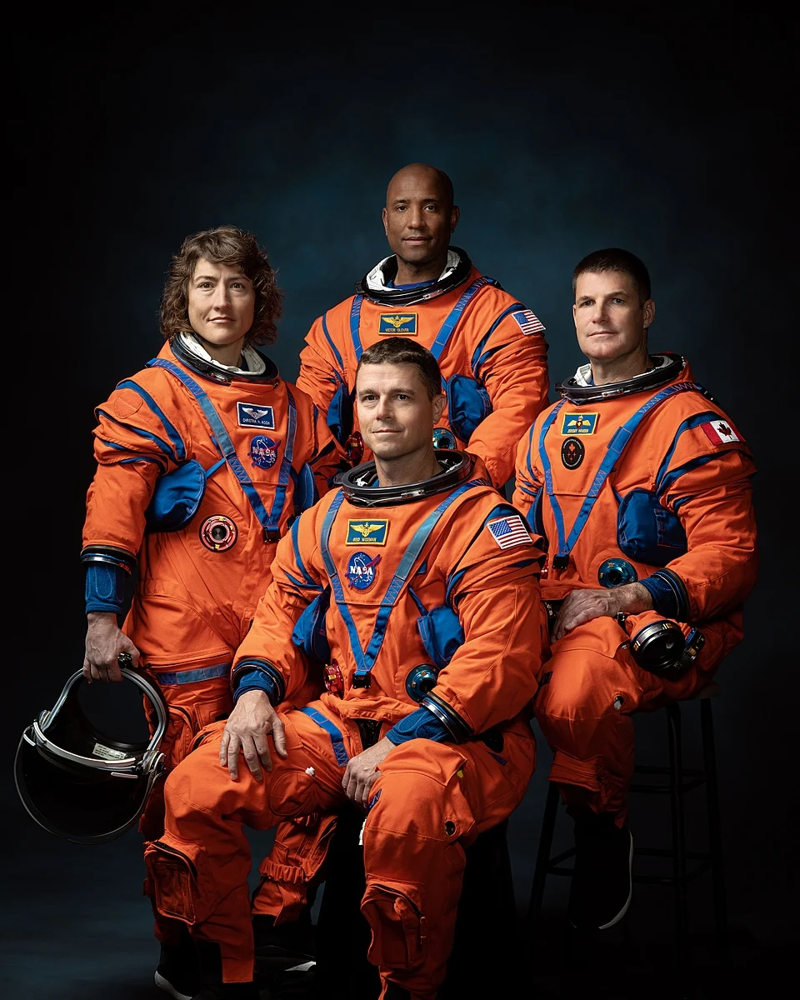
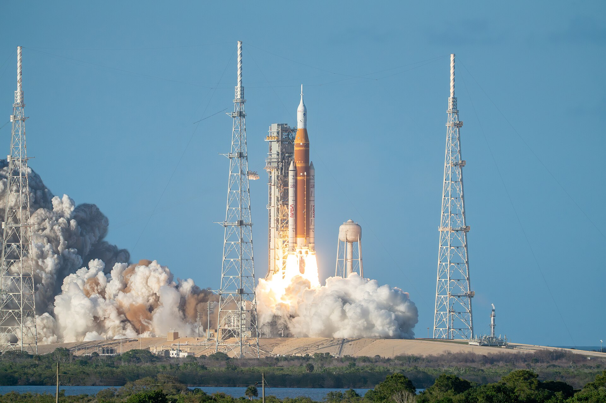

ארטמיס 2
ארטמיס 2 (באנגלית: Artemis II) היא טיסת הניסוי המאוישת הראשונה של החללית אוריון, והמשימה השנייה
בתוכנית ארטמיס של נאס"א.
משימה זו היא הטיסה המאוישת הראשונה בקרבת הירח מאז אפולו 17 בשנת 1972.
החללית שוגרה ב־1 באפריל 2026 בשעה 22:35:12 לפי זמן אוניברסלי מתואם על ידי המשגר Space Launch System
(SLS) מכן השיגור 39B במרכז החלל קנדי שבפלורידה.
המשימה נמשכה תשעה ימים, ונשאה את האסטרונאוטים ריד וייזמן, ויקטור גלאבר וכריסטינה קוק מנאס"א ואת
ג'רמי הנסן מסוכנות החלל הקנדית אל טיסת יעף מסביב לירח ובחזרה לכדור הארץ.
במשימה זו הגיעו חברי הצוות לנקודה הרחוקה ביותר בחלל שאליה הגיעו בני אדם אי פעם - מרחק של 406,773 ק"מ
מכדור הארץ, כששת אלפים קילומטרים רחוק יותר מהשיא הקודם של משימת אפולו 13 משנת 1970.
זו גם הטיסה שחלפה הכי רחוק מעבר לצד הרחוק של ירח, במרחק של 7,600 קילומטרים ממנו.
משימה זו בחנה את כשירותם של החללית אוריון והמשגר SLS בטיסה מאוישת ראשונה של שניהם, כהכנה לקראת נחיתה
מאוישת בקוטב הדרומי של הירח בשנת 2028.

היסטוריה
תכנון המשימה

פרופיל משימת ארטמיס 2 השתנה מספר פעמים בחלוף השנים. עם ביטולה של תוכנית קונסטליישן בפברואר 2010, ניתן מימון ממשלתי לפיתוח משגר ה-Space Launch System (SLS); משגר חדש למשימות מאוישות מעבר למסלול הלווייני הנמוך. שם המשימה לארטמיס 2 נקרא תחילה "SLS-2" וכלל שיגור מאויש של החללית אוריון בידי המשגר החדש והקפה סביב הירח. מאוחר יותר שונה שמה של המשימה והיא נקראה "Exploration Mission-2" ("EM-2"). באפריל 2013 נאס"א הציעה את תוכנית "Asteroid Redirect Mission" אשר כללה הסטת אסטרואיד קטן בגודל של מספר מטרים למסלול סביב הירח ומשימת מחקר מאוישת אליו במסגרת משימת "EM-2". תוכנית זו לא קיבלה את המימון הנדרש והתקדמותה הייתה איטית ולא כללה צעדים ברורים.
במרץ 2017 אושר תקציב נאס"א כחוק "NASA Transition Authorization Act of 2017" וכלל את מפת הדרכים של נאס"א לשנים הבאות. תחת חוק זה שונה פרופיל משימת EM-2 כך שהיא תכלול טיסת יעף מאוישת סביב הירח במסלול חזרה-חופשית (free-return trajectory) ותציב את היחידה הראשונה של תחנת החלל הירחית Lunar Gateway במסלול סביב הירח. בשנת 2020 שינתה נאס"א את פרופיל המשימה פעם נוספת והסירה את החלק של הצבת היחידה של תחנת החלל הירחית במסלול סביב הירח. מעתה משימת ארטמיס 2 כללה שיגור מאויש של החללית אוריון אל טיסת יעף סביב הירח וחזרה לכדור הארץ.